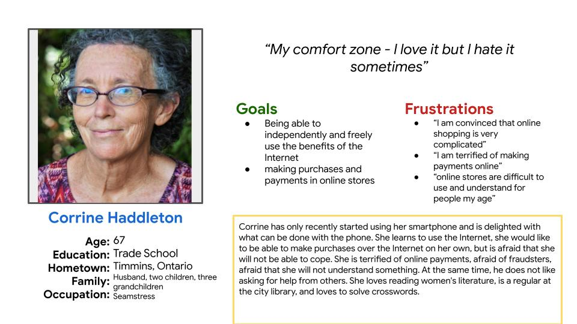
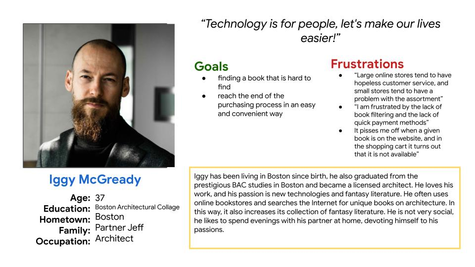
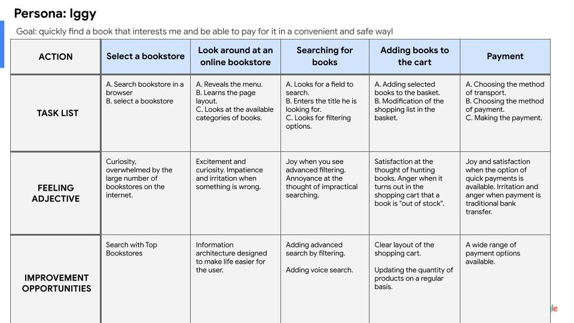
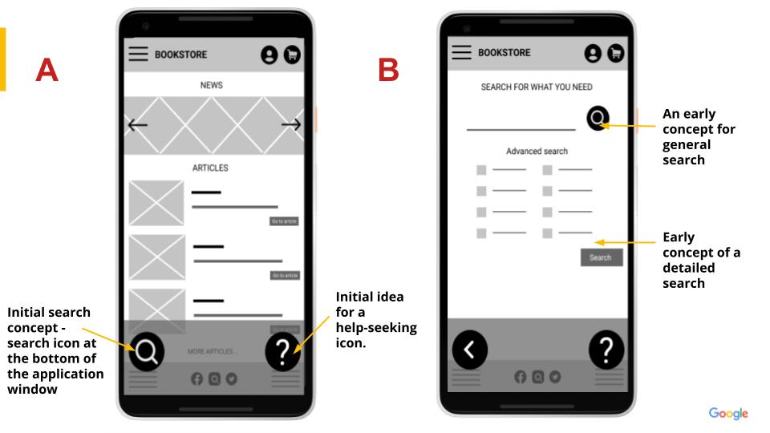
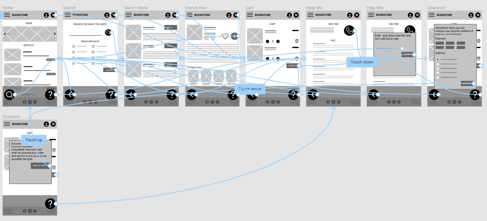
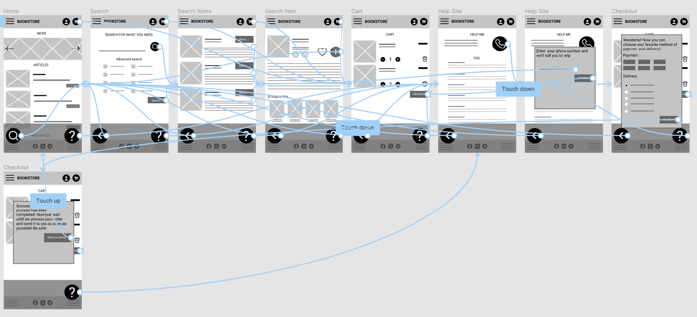

BookStore App
case study
The project involves the development of an application for making purchases in an online bookstore.
Project duration: October 2021 - January 2022
My role: UX researcher, UX designer
Responsibilities: user research, wireframing, prototyping, testing
Project overview
The problem:
- Difficult to use, inaccessible, especially for older people, applications discourage their use.
- The lack of filtering options and the possibility of quick payments annoys and frustrates users.
The goal:
- The application must be easy for everyone to use. With particular emphasis on older people who have no experience in online shopping.
- The application must contain filtering options, a wide range of payment options.
- The application must provide assistance at every stage.
User research: summary
- I conducted interviews and created empathy maps to understand the users I’m designing for and their needs.
- The main group of users identified on the basis of research - a group of adults of various ages, including older people, and working people with little time and high expectations on a daily basis.
- This user group confirmed the initial assumptions about BookStore App customers. For many people, the application was too complicated, some people gave up due to the lack of alternatives in searching for books, some people gave up due to limited payment options.
User research: pain points
-
1
Accessibility
Older people find it very difficult to use shopping apps. Simple operation is conducive to a quick solution.
-
2
IA
Searching for a specific product takes too long
-
3
Payment options
The lack of a wide range of payment options discourages users from using the application.
Persona: Corinne Haddleton
Link to info: Click here
Problem statement: Corrine is a old lady who needs a way to easily buy books online because she doesn't want to ask anyone for help.
User story: As an older person with little internet shopping experience I want to make my shopping experience very simplified and safe, so that to buy books on my own.
Persona: Iggy McGready
Problem statement: Iggy is a busy architect, who needs a way to buy a few special books quickly and comfortable because he is demanding and he has little time. .
User story: As a user with advanced technological skills I want to be able to use advanced search and many attractive payment options so that I can make quick purchases.
User journey map
Link to info: Click here
Starting the design
Paper wireframes:
- Taking the time to iterate each application screen on paper has ensured that the items that ended up in the digital wireframes were well suited to solving user problems. From the very beginning, I wanted the application to offer help at every stage and to make it as simple as possible.
Digital wireframes
-
A. As the initial design phase continued, I made sure to base
screen designs on feedback and findings from the user research.
-
B. Easy search was a key user need that I had to include in the
project.

Low fidelity prototype:
Using the completed set of digital wireframes, I created a low-fidelity prototype. Quite quickly, I gave up the startup screens and made a few minor visual changes

Link to prototype
Usability study: findings
I conducted two rounds of usability studies. Findings from the first
study helped guide the designs from wireframes to mockups. The second
study used a high-fidelity prototype and revealed what aspects of the
mockups needed refining.
-
1
the searched icon must move to the top of the application window,
because that's where most of the users look for it
-
2
the help option must be more visible and intuitive
-
3
standard and advanced search should be more separated
-
4
purchase summary sent to a personal email is necessary
- A. As the initial design phase continued, I made sure to base screen designs on feedback and findings from the user research.
- B. Easy search was a key user need that I had to include in the project.
Using the completed set of digital wireframes, I created a low-fidelity prototype. Quite quickly, I gave up the startup screens and made a few minor visual changes
Link to prototype
I conducted two rounds of usability studies. Findings from the first study helped guide the designs from wireframes to mockups. The second study used a high-fidelity prototype and revealed what aspects of the mockups needed refining.
-
1
the searched icon must move to the top of the application window, because that's where most of the users look for it
-
2
the help option must be more visible and intuitive
-
3
standard and advanced search should be more separated
-
4
purchase summary sent to a personal email is necessary